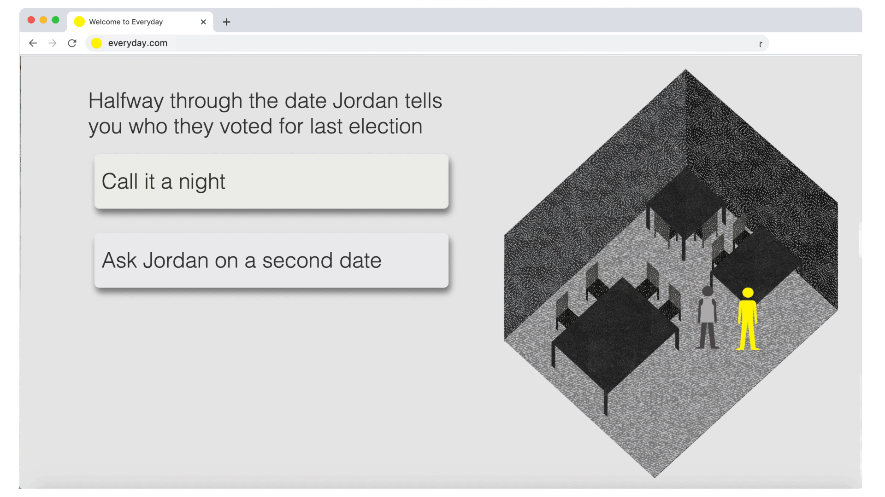
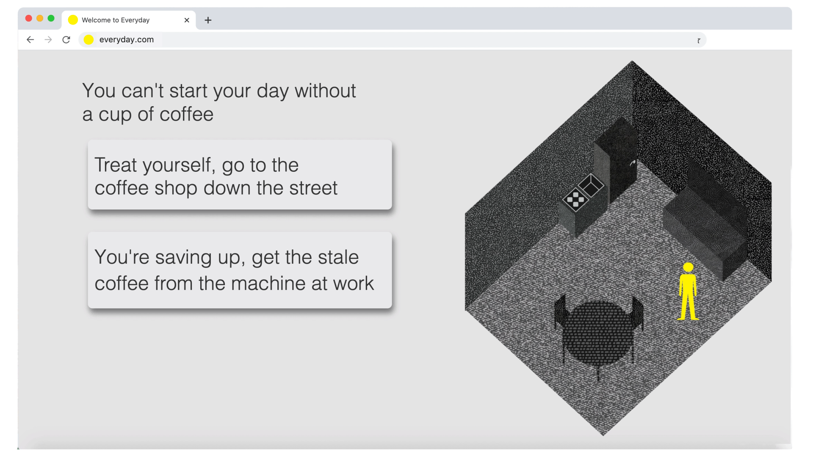
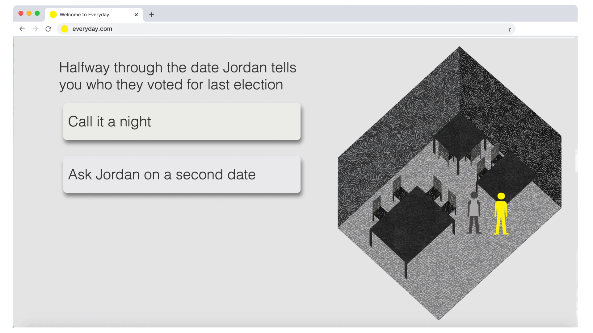
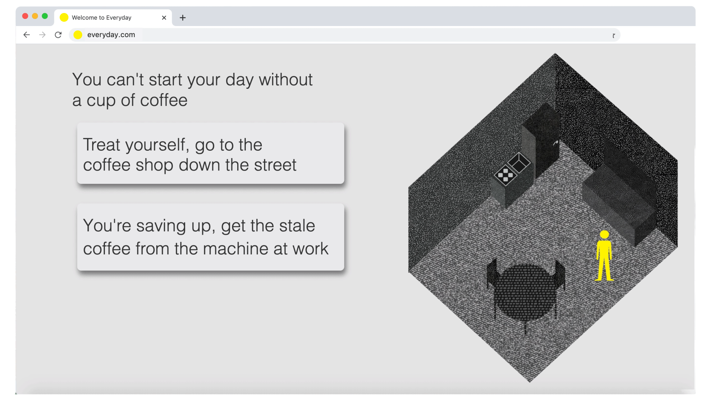

The aim of my thesis is to play with the idea of the generic and the mundane and create an experience that is based on an average persons everyday life. However, Everyday is flattened out its basic components to the extent that the world i’ve created feels relatable yet slightly unfamiliar. Working with the theme of the generic, the medium of this project has also been broken down to its most mundane components. Any interactive game has a handful of tropes, Everyday manifests these tropes into a mundane setting and implements them into familiar interactions. The objective of my game is not only to build an appreciation for the mundane, but also to remind the audience of the beginnings and purpose of graphic design, reducing information to its essence.

 


